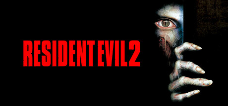

La historia ocurre en Raccoon City, una ciudad que ha sido devastada por un brote del virus T, convirtiendo a sus habitantes en zombis. El jugador puede controlar a dos protagonistas: Leon S. Kennedy, un policía novato en su primer día de trabajo, y Claire Redfield, una joven que busca a su hermano Chris.
Genero: Terror, accion y supervivencia
Desarroladoora: Capcom
Año de lanzamineto: 1998
Objetivo principal: Sobrevivir al brote zombi, descubrir los secretos de Umbrella y escapar de Raccoon City.